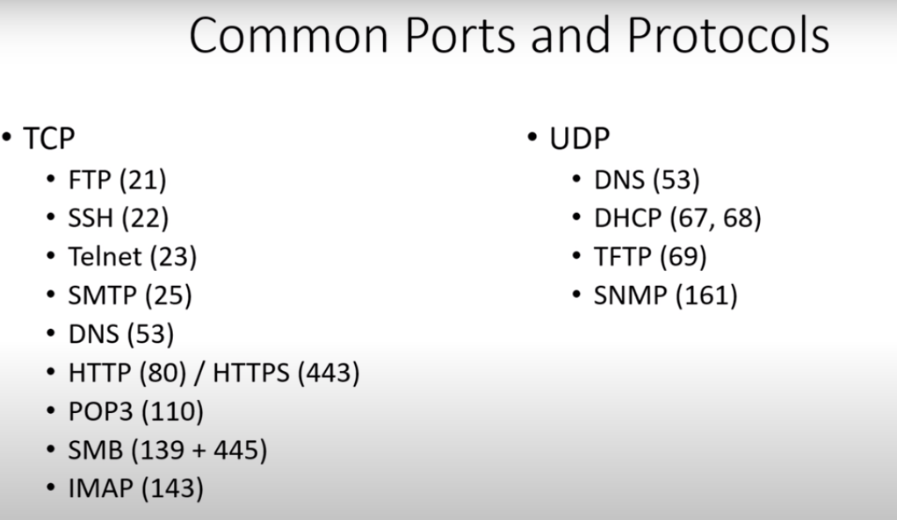

FTP is File Teansfer Protocol, in some assessments it will show up, and its common when we do a thing called capture the flag,
it means we can log in to the server, we can put a file or we can get a file off the server
SSH and Telnet kinda play hand in hand,
Telnet is the ability to log in to a machine remotely,
SSH does the same thing,
the only difference is that ssh is the encrypted version of Telnet
SMTP and POP3 and IMAP
they are all related to mail,
DNS: Domain Name System
is a way to resolve ip addresses into names,
like google.com, if you type google in the machine, and with DNS the computer knows oh you want to go to the ip address xxx;xxx;xxx;xxx
HTTP AND HTTPS
that is website, and http is the non-secure version of the protocol,
https is encrypted
SMB or Samba
probably the most common ports, as a pen tester
these relate to file shares,
and from pen tester prospective, you have to think about all the carzy exploits we have we've had regarding smb
the most recent one up to the date 2022 01 as of the course was the wannacry virus or eternal blue or ms-17010
this expoit utilized an smb expoit to navigate through networks so it became very visious very quick because smb is opened so frequently on networks
DNS
DHCP:
DHCP associates you with an ip address kind of random
TFTP:
its trivial ftp, it utilizes udp instead of tcp
SNMP:Simple Network Management Protocol